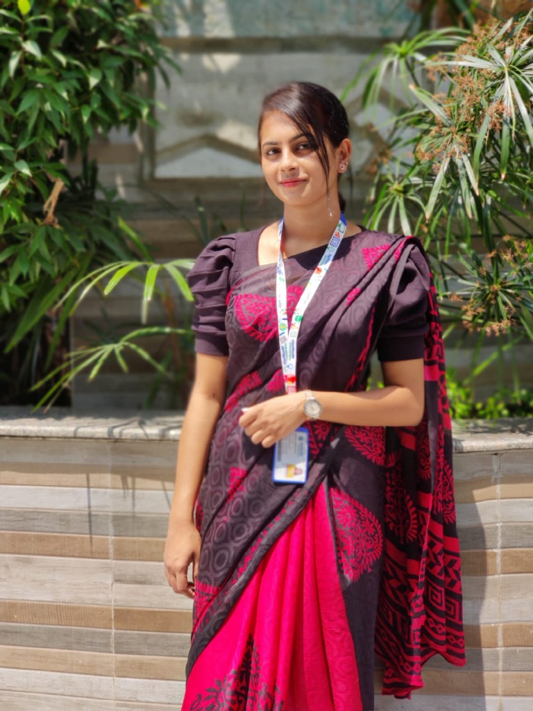
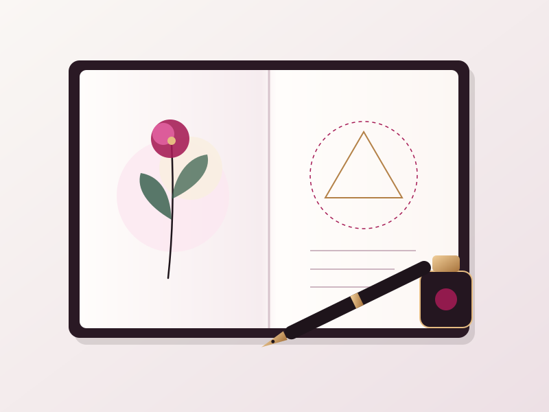
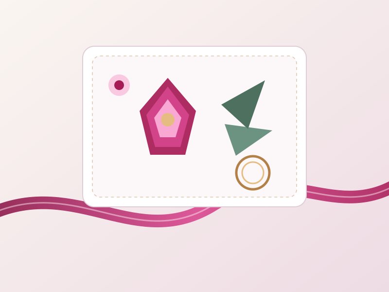
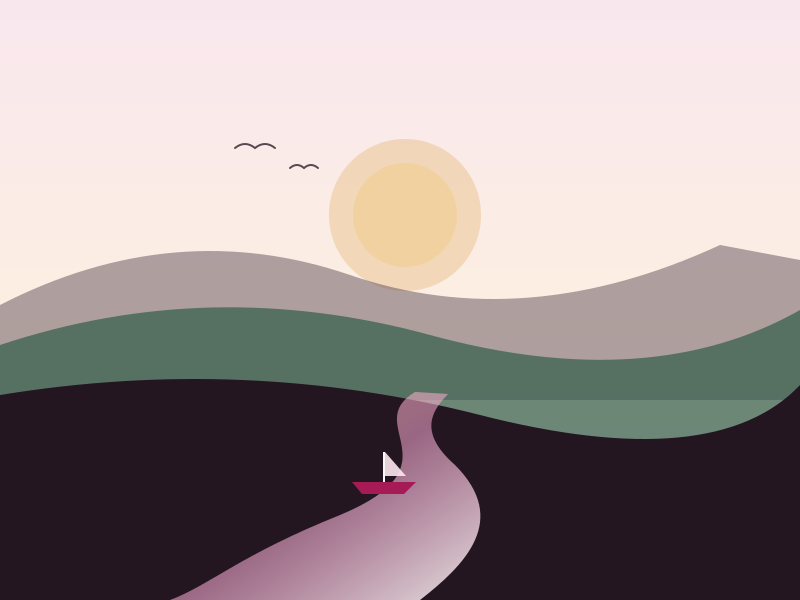

2023 – Present · Dhaka
B.Sc. in Computer Science & Engineering (CSE)
Daffodil International University (DIU) — Coursework spanning Object-Oriented Programming, Computer Graphics Design, Digital Logic Design, Computer Networks, and Web Systems.
01 · Profile
I am Spriha Ghosh Puja, a Computer Science & Engineering undergraduate at Daffodil International University (DIU) based in Ashulia, Savar, Dhaka with hometown roots in Natore, Rajshahi.
Whether architecting object-oriented management applications, simulating 2D evolutionary life, or preparing structured reports in Microsoft Excel, Word, and PowerPoint, I combine methodical engineering with aesthetic care.

02 · Education
2023 – Present · Dhaka
Daffodil International University (DIU) — Coursework spanning Object-Oriented Programming, Computer Graphics Design, Digital Logic Design, Computer Networks, and Web Systems.
2021 · Rajshahi Board · GPA 5.00 / 5.00
N.S. Govt. College, Natore — Achieved maximum GPA 5.00 out of 5.00 in Science.
2019 · Rajshahi Board · GPA 5.00 / 5.00
Natore Govt. Girls' High School, Natore — Achieved maximum GPA 5.00 out of 5.00 in Science.
| Degree / Certificate | Institute | Board / University | Passing Year | Result / Status |
|---|---|---|---|---|
| B.Sc. in CSE (Science & Engineering) | Daffodil International University | UGC Accredited University | 2023 – Ongoing | Active Undergraduate |
| HSC (Science Group) | N.S. Govt. College, Natore | Rajshahi | 2021 | GPA 5.00 out of 5.00 |
| SSC (Science Group) | Natore Govt. Girls' High School, Natore | Rajshahi | 2019 | GPA 5.00 out of 5.00 |
03 · Credentials & Honors
Consistent top-tier Science results across both SSC (Natore Govt. Girls' High School) and HSC (N.S. Govt. College, Natore).
Structured mastery of Semantic HTML5, CSS Grid/Container Queries, Accessible Forms, and Interactive ES6 JavaScript.
Hands-on proficiency creating analytical Excel workbooks, formal Word technical reports, and PowerPoint slide decks.
Participated in university technical workshops covering OOP System Modeling, Digital Logic Circuits, and VLAN Network Design.
Attended peer-led coding sessions focusing on C++/Java algorithmic thinking, debugging practices, and GitHub version control.
Active volunteer participant supporting campus events, tech club initiatives, and emergency blood donor coordination.
04 · Languages
| Language | Reading | Writing | Listening | Speaking |
|---|---|---|---|---|
| Bengali | Excellent | Excellent | Excellent | Excellent |
| English | Excellent | Good | Good | Good |
05 · Extracurricular Activities
Supporting student outreach initiatives, event organization, and collaborative community assistance programs.
Active engagement in technical peer learning, software design discussions, and university computing showcases.
Helping coordinate awareness and urgent blood donor mobilization across the university community.
06 · Creative Pursuits & Media
Click any artwork card below to inspect it in full view.
Light, Architecture & Quiet Moments

Botanical Studies & Visual Balance

Tactile Paper Art & Detail Work
Vocal Expression & Melody

From Natore to Dhaka & Beyond
Acoustic Motif
Gentle 8-second acoustic arpeggio inspired by calm melodic practice.